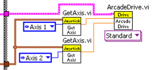

Teaching Programming through FIRST
Created by Patrick Booth / @motleymentor
Patrick Booth
| Computer Science & Engineering, Math, Music | |
| Computer and Automation Systems, Robotics | |
| Data Acquisition, Engine Control Simulations |
Computer Science for All
"Giving Every Student an Opportunity"
Computer Science for All
CS is a “new basic” skill necessary for
economic opportunity and social mobility.
Federal: $4 billion → states, $100 million → districts
Institutional: NSF & CNCS → $135 million
Philanthropic: $60 million.
"Workers of all kinds need to be able to figure out how to break a big problem into smaller pieces and identify the right steps to solve it."
Math class needs a makeover
"An impatience with irresolution."
Math class needs a makeover
Lack of initiative, perseverance, and retention. Aversion to word problems. Eargerness for formula.
Due to conditioning of problems, an impatiences of resolution.
What's the point of Hello World?

More Than Robots
Organization
For Inspiration and Recognition of Science and Technology
“...to show students of every age that science, technology, and problem-solving are not only fun and rewarding, but are proven paths to successful careers and a bright future for us all.” |
Matches
Season
Pre-season: Workshops
Build seasons: Development
Competitions: Operation
Off-season: Demos, Experiments
Kickoff
Strategizing / Prototyping / Designing
Languages
C++
class Robot: public IterativeRobot {
public:
Robot() : myRobot(0,1) { }
Java
public class Robot extends IterativeRobot {
public void robotInit() { }
LabView

Common USB Boot Keys
Dell: Tap F12
HP: Tap F9
Lenovo: Tap F12
Apple Mac: Hold Option
Others: Try tapping Esc, F1-12,
or Enter when the machine first starts
Fragments
Hit the next arrow...
... to step through ...
... a fragmented slide.
Fragment Styles
There's different types of fragments, like:
grow
shrink
fade-out
current-visible
highlight-red
highlight-blue
Transition Styles
You can select from different transitions, like:
None -
Fade -
Slide -
Convex -
Concave -
Zoom
Themes
reveal.js comes with a few themes built in:
Black (default) -
White -
League -
Sky -
Beige -
Simple
Serif -
Blood -
Night -
Moon -
Solarized
Slide Backgrounds
Set data-background="#dddddd" on a slide to change the background color. All CSS color formats are supported.
Image Backgrounds
<section data-background="image.png">Tiled Backgrounds
<section data-background="image.png" data-background-repeat="repeat" data-background-size="100px">Video Backgrounds
<section data-background-video="video.mp4,video.webm">... and GIFs!
Background Transitions
Different background transitions are available via the backgroundTransition option. This one's called "zoom".
Reveal.configure({ backgroundTransition: 'zoom' })Background Transitions
You can override background transitions per-slide.
<section data-background-transition="zoom">Pretty Code
function linkify( selector ) {
if( supports3DTransforms ) {
var nodes = document.querySelectorAll( selector );
for( var i = 0, len = nodes.length; i < len; i++ ) {
var node = nodes[i];
if( !node.className ) {
node.className += ' roll';
}
}
}
}
Code syntax highlighting courtesy of highlight.js.
Marvelous List
- No order here
- Or here
- Or here
- Or here
Fantastic Ordered List
- One is smaller than...
- Two is smaller than...
- Three!
Tabular Tables
| Item | Value | Quantity |
|---|---|---|
| Apples | $1 | 7 |
| Lemonade | $2 | 18 |
| Bread | $3 | 2 |
Clever Quotes
These guys come in two forms, inline:
“The nice thing about standards is that there are so many to choose from”
and block:
“For years there has been a theory that millions of monkeys typing at random on millions of typewriters would reproduce the entire works of Shakespeare. The Internet has proven this theory to be untrue.”
Intergalactic Interconnections
You can link between slides internally, like this.
Speaker View
There's a speaker view. It includes a timer, preview of the upcoming slide as well as your speaker notes.
Press the S key to try it out.
Export to PDF
Presentations can be exported to PDF, here's an example:
Global State
Set data-state="something" on a slide and "something"
will be added as a class to the document element when the slide is open. This lets you
apply broader style changes, like switching the page background.
State Events
Additionally custom events can be triggered on a per slide basis by binding to the data-state name.
Reveal.addEventListener( 'customevent', function() {
console.log( '"customevent" has fired' );
} );
Take a Moment
Press B or . on your keyboard to pause the presentation. This is helpful when you're on stage and want to take distracting slides off the screen.
Much more
- Right-to-left support
- Extensive JavaScript API
- Auto-progression
- Parallax backgrounds
- Custom keyboard bindings